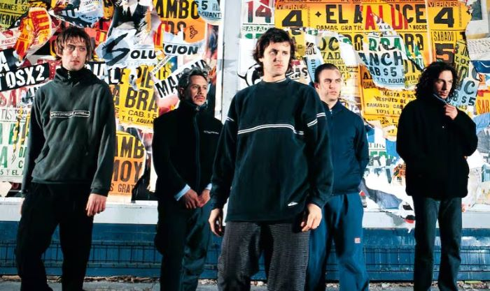

Que es ritual 87?
Ritual 87 es un sitio donde te brindamos toda la informacion que necesites saber acerca de esta banda
hermosa que nos regalo el rock, un sitio que te sumergera en sus primeros encuentros con sus fanaticos,
en cada historia de sus canciones hermosas
y todo lo que viene pasando por su nuevo reencuentro ¡Disfruta la pagina!
Quienes son los piojos?
Los Piojos es una banda Argentina de rock formada a fines del año 1988, en la localidad de Ciudad Jardín Lomas del Palomar.
Estuvo conformada, primordialmente, por el vocalista y letrista Andrés Ciro Martínez, el bajista Miguel Ángel Rodríguez,
los guitarristas Gustavo Kupinski y Daniel Fernández, y el baterista Daniel Buira. De todos los grupos surgidos durante
la década de los 90, Los Piojos se erigió como una de los más populares incluso después de su separación.
